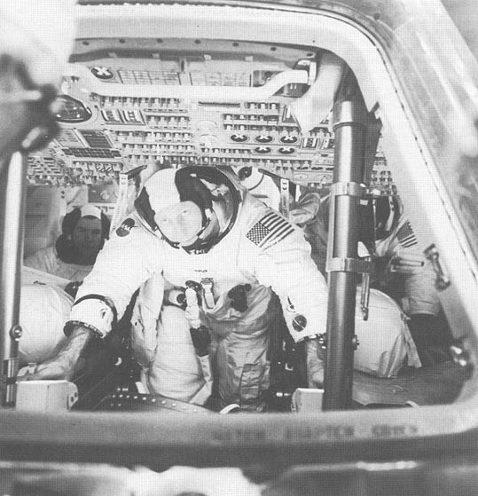

Computers in Spaceflight: The NASA
Experience
- - Chapter Two -
- - Computers On Board The Apollo
Spacecraft -
Using the AGC
-
-
- [53] The Apollo
computer system made great demands on the crew. It took about
10,500 keystrokes to complete a lunar mission; not much in the
life of an airline reservations clerk but still indicative of how
computer centered the crew had to be144. During the period in which the software was
criticized for its complexity, designers attempted to reduce the
number of keystrokes required to execute various programs. When
possible, they also eliminated built-in halts as data were
displayed for astronaut approval. However, the "fourth crew
member" never abandoned center stage145.
-
- Apollo's crew employed its computer
through the use of the DSKYs. In the CM one was on the main
control panel opposite the commander's couch. The other was at the
navigator's station in the lower equipment bay, where the computer
itself was located. Block I had a different DSKY at the
navigator's station than on the main panel146, but they were identical in the Block II series.
DSKY and computer activity could be monitored from the ground as
the computer transmitted data words to drive real-time displays in
Mission Control147.
-
- The crew could communicate with the
computer through keys, displays, and warning lights on the DSKY.
Additionally, the uplink telemetry could provide input to the
machine, and so could the preflight checkout
equipment148. The computer, in turn, could communicate with the
crew by flashing the PROGram, VERB, and NOUN
displays149. The DSKY displays included 10 warning lights, a
computer activity light, a PROGram display, VERB and NOUN
displays, three five-digit numeric displays with signs, and 19
keys including VERB, NOUN, CLEAR, KEY RELEASE, PROCEED, RESET,
ENTER, PLUS, MINUS, and the digits 0-9. See Boxes 2-2 and 2-3 for
functions and use.
-
-
-
[54]

- Fig. 2-2. The Display and Keyboard
(DSKY) of an Apollo spacecraft. (prepared by the Wichita State
University Media Services)
-
-
-
- [55] Box 2.2:
Apollo Display and Keyboard Lights
-
- Ten DSKY warning lights had the following
functions:
-
- COMP ACTY: This lit up when the computer
was turning a program.
- UPLINK ACTY: Lit when data was being
received from the ground.
- TEMP: Lit when the temperature of the
stable platform was out of tolerance.
- NO ATT: Lit when the inertial subsystem
could not provide attitude reference.
- GIMBAL LOCK: Lit when the middle gimbal
angle was greater than 70 degrees.
- STBY: Lit when the computer system was on
standby.
- PROG: Lit when the computer was waiting
for additional information to be entered by the crew to complete
the program.
- KEY REL: Lit when the computer needed
control of the DSKY to complete a program. Sometimes display
information could be "buried" under other routines or by a
priority interrupt. The crew could press the KEY REL key to
release the keyboard to the requesting program150. When the KEY REL light went on, that signaled the
crew to press the key.
- RESTART: Lit when the computer was in the
restart program. This was the light that kept coming on during the
Apollo11 landing.
- OPR ERR: Lit when the computer detected an
error on the keyboard.
- TRACKER: Lit when one of the optical
coupling units failed.
-
- The LEM DSKY had three additional lights:
NO DAP, ALT, and VEL, which were related to failures of the
digital autopilot and to warn of altitude and velocity readings
outside of the predetermined limits.
-
-
-
[56]
-

-
- Figure 2-3. Another DSKY was
located at the navigator's station in the command module.
Astronaut James A. Lovell takes a star sighting during the Apollo
8 mission. (NASA photo S-69-35099)
-
-
-
- Box 2.3: Apollo Display and Keyboard
Displays
-
- Seven displays were available on the
DSKY:
-
- PROG: This was a two-digit display
indicating what numbered program the computer was currently
executing.
- VERB: A two-digit display of the verb
number being entered (the verb-noun system is discussed
below).
- NOUN: A two-digit display of the noun
number being entered.
- Three five-digit numeric displays, which
showed numbers in either decimal or octal (base eight). When a
sign was shown with the number, the number was decimal; otherwise,
it was octal151.
-
-
-
[57]
-
- 
-
- Figure 2-4. The interior of an
Apollo Command Module, showing the location of the DSKY on the
main control panel at the left. Apollo 15 crewmen shown include
Alfred M. Worden (center) and David R. Scott (left). James B.
Irwin is mostly obscured to the right. (NASA photo SS-71-29952)
-
-
-
- Using the Keys and the
Verb-Noun System
-
-
- Astronauts used keys to enter information
and select programs and actions. Key inputs caused automatic
interrupts in the software152. The astronauts would activate a program and then
interact with it by requesting and entering information; a typical
software load consisted of about 40 programs and 30 simultaneous
routines153. Changing programs and making other requests
involved using the verb-noun system. Those familiar with current
computer keyboards [58] will notice
the lack of alphabet keys on the DSKY. Whereas most computer
commands are entered by typing in the text of the command, the
Apollo computer command list specified verb and noun pairs. There
were 100 two-digit numbers available for each, and most were used
on any given flight. Examples of verb-noun pairs are "display
velocity" and "load angle." Verb 37, for example, was "Change
Prog," which enabled the crew to set up a new program for
execution.
-
- If, for example, the crew wanted to
execute the rendezvous targeting program, an astronaut would first
press the VERB key followed by the digits 3 and 7, and then the
ENTER key. That sequence informed the computer of a request for a
program change. The astronaut would then press 3, 1, and ENTER to
tell the computer to execute program P31. Within the program the
crew could request maneuver angles (verb 50, noun 18), monitor the
changes while a maneuver was in progress (verb 06, noun 18), or
request the velocity change required for the next maneuver (verb
06, noun 84), among other functions. The CSM G&C Checklist, a
set of "cue cards" on three rings changed for each mission by the
Crew Procedures Division in Houston, described all these sequences
in detail. The document contained reference data, such as a star
list, verb list, noun list, alarm codes, error handling and
recovery, and the checklists for each program carried in the
computer.
-
- Despite the 100 verb-noun pairs, 70-odd
programs and routines, and a very limited user interface that
alternated decimal and octal and blinked for attention, the
consensus is that the Apollo computer was easy to use. As with
other aspects of flying space missions, hours in simulators made
operating the computer second nature. NASA engineer John R. Garman
commented that "it's like playing the piano-- you don't have to
see your fingers to know where they are"154. Familiarity with the computer, remarked astronaut
Eugene Cernan, meant that pressing a wrong key simply and
immediately "felt" wrong155. Others also confirmed that using the machine
eventually became relatively natural156. Apollo astronauts were also willing to adapt to
design foibles that would frustrate others. There were concerns
that a crewman initiating a maneuver from the navigator's station
would not be able to return to his couch before the burn started.
In response, Virgil Grissom was accommodating: "Well, we'll just
lie down on the floor"157. Astronauts also tolerated non-life-threatening
software errors not cleared up before flight as merely something
else to endure158. They did, however, complain about the annoying
number of keystrokes required during a rendezvous, so designers
modified the software to make a "minkey" (minimum keystroke)
option available, in which the computer could perform some
functions without constant crew approval159. This change contributed to an even more compact,
straightforward system.